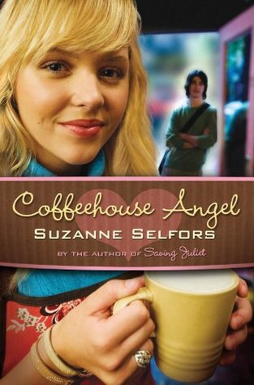

Home TV Shows Books Writing Extras
My Favorite Books

Coffeehouse Angel
My all time favorite book is "Coffeehouse Angel" by Suzanne Selfors. It's about this girl named Katrina who doesn't exactly have a peachy life--with her parents dead and her grandma working harder than she's supposed to be to keep the family coffeehouse running. The two biggest challenges for Katrina and her grandmother's coffehouse were the nextdoor competeition; a more advanced and "all-natural" coffee cafe and the homeless guy who was sleeping in their alley. Throughout the story we see how Katrina faces all these battles from having problems with her best friend and worrying about school to contending with her neighbour and dealing with the homeless but not really homeless guy in her alley. I've read this book like 999,999 times and I fall in love with it every single time.
O.C.D Love Story
O.C.D Love Story is a book about a beautiful young lady named Bea and the obstacles she has to go through. When you see this girl, you'd think she's quiet, shy and creative (based off of her clothes) however her biggest flaw or problem was ObSessive Compulsive Disorder [OCD] which slowly starts to cause trouble for her and disrupt her daily lifee--which may have been expected. She has a crush on a boy named Beck, who is also diagnosed with OCD and they quickly become a couple almost without realizing although both of their compulsions get in the way of their relationship. Bea is forced to juggle her friendship with her best friend, her relationship with Beck and her compulsion-which is stalking, (not an easy thing to deal with) all at the same time and throughout the story, with help we see how Bea handles everything. This book was almost an eye-opener to me because I was seeing the struggles of a few people all at once. It was almost an informative book and could teach you different things when you look deeper into it. It's one of my favorite books because I enjoyed reading it.
The Mischievous Mrs. Maxfield
Just like Coffeehouse Angel, I've read this book over and over but unlike Coffeehouse Angel this book is less serious. This book about Charlotte, a young lady who was only twenty years old is offered a million dollars with the cost of being the wife to the arrogant but handsome heir of Maxfields Inds.--Brandon Maxfield. Although her financial situtation was bad, she was still hesistant to accept this offer. In the end though, she accepts and we see what becomes of Charlotte and Brandon's story as their business deal may turn into more than just the a deal. I love reading this book because watching their association form into a beautiful relationship is so heartfelt and takes me on a crazy emotional rolleroaster, a good crazy emotional roller coaster.